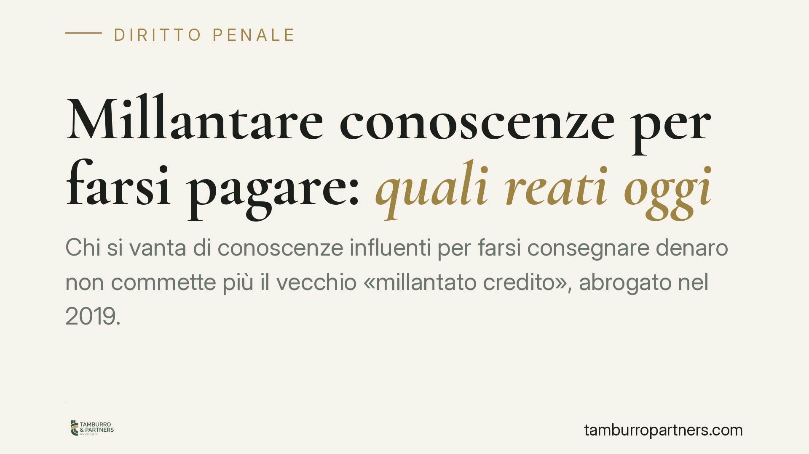

Millantare conoscenze per farsi pagare: quali reati oggi
Chi si vanta di conoscenze influenti per farsi consegnare denaro non commette più il vecchio «millantato credito», abrogato nel 2019. La condotta, però, può integrare il traffico di influenze illecite oppure, quando vi sono artifici e raggiri con danno patrimoniale, la truffa. Ricostruiamo il quadro normativo aggiornato e le sue ricadute pratiche.

Il punto di partenza: nessun vuoto normativo
Circola l'idea che, poiché il reato di «millantato credito» non esiste più, chi si spaccia per conoscente di funzionari o magistrati per ottenere denaro non rischi nulla sul piano penale. È un'idea sbagliata.
L'errore nasce da una lettura imprecisa della cronologia normativa. Il millantato credito, un tempo previsto dall'art. 346 del codice penale, è stato abrogato dalla legge 9 gennaio 2019, n. 3 (la cosiddetta «Spazzacorrotti»), non nel 2024. Quella condotta non è stata resa lecita: è confluita nel traffico di influenze illecite, disciplinato dall'art. 346-bis c.p.
Nel 2024 è intervenuta la legge 9 agosto 2024, n. 114, che ha ristretto e ridisegnato proprio il traffico di influenze illecite, riducendone il perimetro applicativo. Da qui l'equivoco: non un'abrogazione, ma una riforma restrittiva della fattispecie superstite.
Traffico di influenze illecite: la fattispecie oggi centrale
L'art. 346-bis c.p. punisce, in sintesi, chi sfrutta o vanta relazioni – vere o asserite – con un pubblico ufficiale o un incaricato di pubblico servizio, facendosi dare o promettere denaro o altra utilità come prezzo della mediazione illecita verso quel soggetto, oppure per remunerarlo.
Due precisazioni utili. La prima: dopo la riforma del 2024 la norma richiede requisiti più stringenti, il che riduce lo spazio della punibilità rispetto alla versione precedente. La seconda: la condotta può essere rilevante anche se le relazioni vantate sono soltanto asserite e non reali. Ma serve un aggancio a una mediazione verso la pubblica amministrazione: la pura fanfaronata, priva di questo collegamento, resta fuori.
Attenzione anche alla posizione di chi paga. Se il committente versa denaro sapendo che serve a corrompere o a ottenere un favore illecito da un pubblico agente, può rispondere a sua volta – a seconda dei casi – di traffico di influenze o addirittura di corruzione. Chi crede di essere la vittima può trovarsi coinvolto come autore.
Quando entra in gioco la truffa
Se manca il collegamento con la pubblica amministrazione, la condotta va valutata sotto il profilo della truffa, prevista dall'art. 640 c.p. La truffa richiede tre elementi: artifici o raggiri, un'induzione in errore della vittima e un danno patrimoniale con corrispondente ingiusto profitto.
Qui sta la distinzione decisiva. La vanteria «nuda» – il semplice affermare di conoscere persone importanti – di regola non basta. Serve un quid in più: documenti falsi, sceneggiature costruite, false attestazioni, contatti simulati, insomma una messinscena idonea a ingannare una persona di normale avvedutezza e a determinare la consegna del denaro. È l'insieme di questi elementi concreti a fare la differenza tra chiacchiera impunita e reato.
Sul punto la giurisprudenza di legittimità è consolidata nel richiedere artifici e raggiri effettivi e non la mera millanteria. Per gli estremi della singola pronuncia si rinvia alla lettura diretta della motivazione, che va sempre verificata nel testo integrale prima di trarne principi.
Implicazioni pratiche
Per chi ritiene di essere stato raggirato, la qualificazione giuridica del fatto non è un dettaglio: cambia il reato contestabile, l'autorità competente e la strategia probatoria. Ricostruire con precisione la sequenza – cosa è stato promesso, con quali mezzi, verso chi era diretta la presunta mediazione – è il presupposto di ogni valutazione.
Per chi ha versato denaro in vista di un favore «illecito», il tema è ancora più delicato: la denuncia della controparte può esporre il denunciante a contestazioni proprie.
Cosa fare in concreto
- Conservate ogni traccia documentale: messaggi, email, ricevute di pagamento, registrazioni, nomi e date. La prova regge la ricostruzione.
- Ricostruite la sequenza cronologica degli eventi, distinguendo le semplici affermazioni dai comportamenti concreti (documenti mostrati, incontri, promesse specifiche).
- Verificate se la richiesta di denaro fosse collegata a un favore verso la pubblica amministrazione: è il crinale tra traffico di influenze e truffa.
- Valutate con cautela la propria posizione se avete pagato per ottenere un vantaggio non dovuto, prima di formalizzare qualsiasi iniziativa.
- Sottoponete la vicenda a una valutazione legale prima di agire, per individuare la qualificazione corretta e l'autorità competente.
Un principio da tenere fermo
L'abrogazione di un reato specifico non trasforma in lecita la condotta che ne era oggetto. Nel nostro caso il millantato credito è scomparso come norma autonoma, ma le condotte che vi rientravano trovano oggi collocazione – a seconda degli elementi concreti – nel traffico di influenze illecite o nella truffa.
Contributo informativo a cura di Tamburro & Partners - Avv. Giuseppe Tamburro. Non costituisce parere legale.
Ogni condominio ha una storia a sé.
Se gestisci un'amministrazione e vuoi un confronto su una specifica questione condominiale, scrivi allo studio. Ti rispondiamo entro un giorno lavorativo.